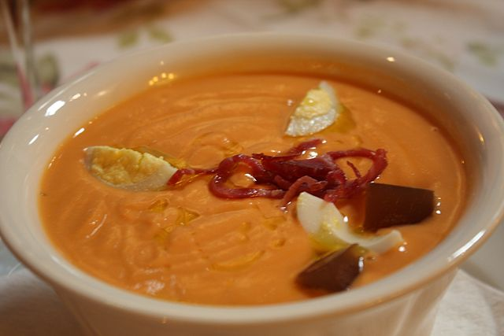

Las recetas de la abuela
Salmorejo cordobés

Ingredientes:
- 1 kg de tomate.
- 200 gr de telera cordobesa.
- 150 ml de aceite de oliva virgen extra.
- 1 diente de ajo.
- Sal al gusto.
Preparación:
- Para hacer el salmorejo, me gusta ir mezclando los ingredientes paso a paso para así conseguir la textura perfecta. Comienzo lavando los tomates, retirando lo verde del pedúnculo y triturándolos. No es necesario pelar ni quitar las pepitas porque después paso el puré de tomate por un colador fino donde se queda todo pasando solamente el tomate.
- En un bol coloco el pan y lo cubro con el puré de tomate dejando que se impregne durante unos diez minutos. Pasado ese tiempo, incorporo el diente de ajo y trituro bien con la batidora o con la Thermomix y obtengo una crema espesa de pan y tomate. La proporción de pan que yo uso es estupenda para esta textura, pero podéis variarla en función del agua que tengan los tomates que utilicéis y de lo consistente que sea la miga.
- A continuación incorporo el aceite de oliva virgen extra. Un buen salmorejo se debería hacer siempre con aceite de la zona de Córdoba, por lo que si podéis, cualquier variedad de la D.O. Priego de Córdoba es la idónea, pero en todo caso, si no tenéis de allí, utilizad un buen aceite de oliva virgen extra que conseguirá la emulsión perfecta y un resultado cremoso y espeso.
- Tras echar el aceite volvemos a turbinar todo en el robot de cocina o a base de batidora y paciencia hasta que nuestro salmorejo sea uniforme, con un bonito color anaranjado y suficientemente compacto como para aguantar sobre su superficie los tradicionales tropezones de guarnición con los que se decora cada ración.